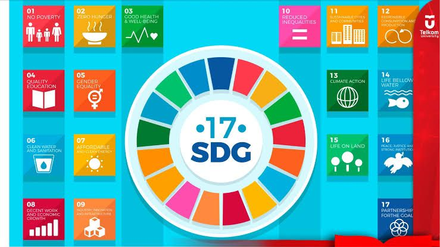
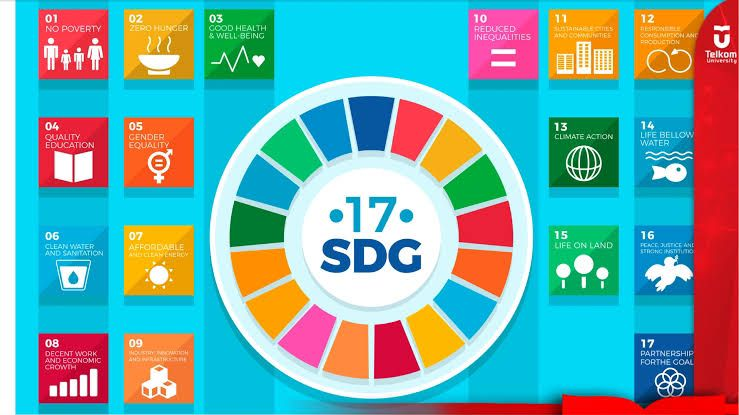

PENGERTIAN SDGs
Sustainable Development Goals (SDGs) atau Tujuan Pembangunan Berkelanjutan (TPB) adalah komitmen global untuk menciptakan dunia yang lebih baik dan berkelanjutan. Ada 17 macam TPB/SDGs yang diharapkan dapat tercapai demi kesejahteraan generasi sekarang dan yang akan datang. Ketujuhbelas tujuan tersebut adalah sebagai berikut :
Tanpa Kemiskinan
Tanpa Kelaparan
Kehidupan Sehat dan Sejahtera
Pendidikan Berkualitas
Kesetaraan Gender
Air Bersih dan Sanitasi Layak
Energi Bersih dan Terjangkau
Pekerjaan Layak dan Pertumbuhan Ekonomi
Industri, Inovasi dan Infrastruktur
Berkurangnya Kesenjangan
Kota dan Permukiman yang Berkelanjutan
Konsumsi dan Produksi yang Bertanggung Jawab
Penanganan Perubahan Iklim
Ekosistem Lautan
Ekosistem Daratan
Perdamaian, Keadilan dan Kelembagaan yang Tangguh
Kemitraan untuk Mencapai Tujuan
Dari ketujuhbelas TPB/SDGs tersebut, saat ini Indonesia sedang membutuhkan pendidikan yang berkualitas. Seperti yang tertulis di bagian kerjasama bilateral, dikatakan bahwa Kemendikbudristek mengajak perguruan tinggi terbaik di Belanda untuk membuka kampus di Indonesia agar Indonesia mendapatkan kualitas pendidikan tinggi. Dilansir dari
www.kompasiana.com , kualitas pendidikan Indonesia saat ini sedang terpuruk. Terbukti dari kualitas pendidik, fasilitas pembelajaran dan peserta didik.
Lalu, bagaimana Pemerintah RI mengatasi isu-isu pendidikan di Indonesia? Melewati kerja sama internasional, Pemerintah RI berpartisipasi dalam mewujudkan SDGs "Pendidikan Berkualitas" di Indonesia. Pemerintah RI mengajak negara-negara lain untuk meningkatkan pendidikan di kedua negara. Mereka mewujudkannya dengan mengadakan pertukaran pelajar, pemberian beasiswa kepada pelajar/mahasiswa berprestasi, riset pendidikan antarnegara, dll.
Lantas, mengapa pendidikan di Indonesia atau di dunia itu penting? Pendidikan memiliki peranan yang sangat penting untuk menunjang kehidupan manusia karena pada dasarnya manusia dalam melaksanakan kehidupannya tidak lepas dari pendidikan. Pendidikan juga yang akan mengantar seseorang ke dalam dunia pekerjaan untuk menghasilkan uang yang akan dipakai untuk memenuhi kebutuhan hidup.
 
